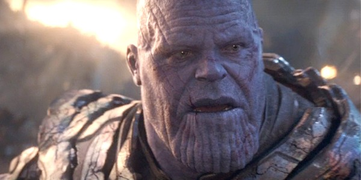

This month's contraversial question
Is Thanos Right About Overpopulation In 'Avengers: Infinity War'?
We've all seen End Game (RIP) but let's go back to a previous film in the series.
Bruce Banner discussed Thanos with Tony Stark, saying "He invades planets, he takes what he wants,
he wipes-out half the population.", now already
seems pretty bad, right?
Do you know the reasons why Thanos does this?
His home world explained that Titan, his home world, faced the problems over overpopulation
(starvation, pollution, collapse of biodiversity)
and he felt compelled to stop this happening to the entire cosmos, alongside y'know.. getting them
stones.
So we pass the question over to you, what do you think?
Let us know by emailing it over to contraversialtopic@angrynerd.com or tweet us @angrynerd_com
Let's get contraversial
Last month twitter user @RhysNathan posed the question "Why didn't they just ride the Eagles into
Mordor in Lord of the Rings?"
Well, you all certianly had mixed reactions to this question, the amount of Sean Bean memes
dominated our Twitter DMs!
We were sent a link to one specific Reddit
thread wrote 3 years and we couldn't word it any better.
Our favourite Animal Crossing memes of the month.
Product review!
We couldn't resist picking up this cute Lord of the Rings Cosplaying Duck! We don't have a bath in
the office, but hey - it's cool!
You can't say it doesn't look like Aragorn, swoon city, right?